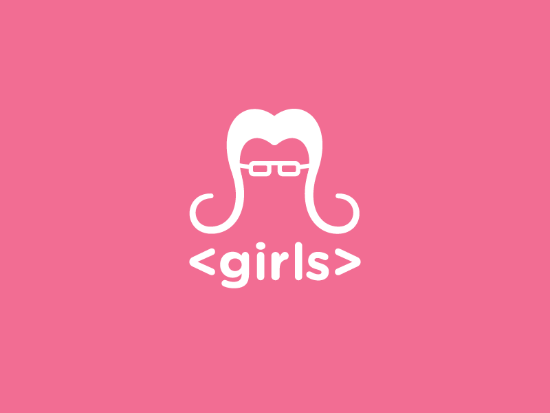
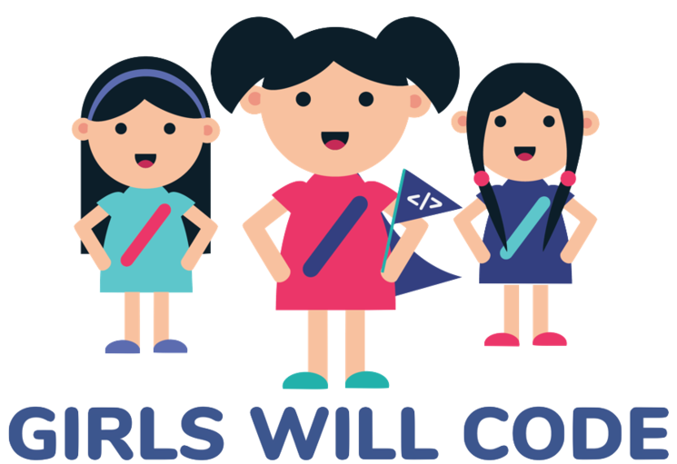

BIENVENID@ A CODE GIRLS

Bienvenida elige un tema

Int, char, float, string y boolean son...
Instrucciones de acceso a datos
Tipos de datos
Funciones de acceso de datos
No es un lenguaje de programacion...
Html
Javascript
Python
¿Cual es la instruccion usada para devolver un valor en una funcion de Javascript...
Value
Send
Return
¿Quien fue la primera programadora...?
Sophie Germain
Jane Goodall
Ana Lovelace
¿Quien fue la primera mujer en ganar dos premios nobel en fisica y quimica?...
Marie Curie
Irene Curie
Maria Goeppert
Escribio el codigo de la AGC para la mision Apolo 11...
Margaret Hamilton
Joan Clarke
Radia Joy Perlman
Tus resultados